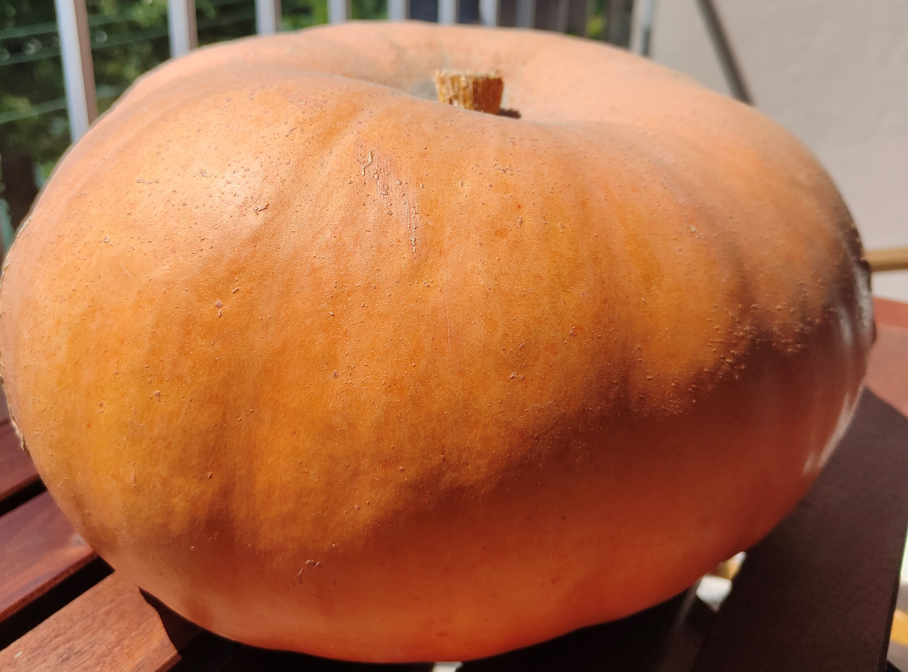
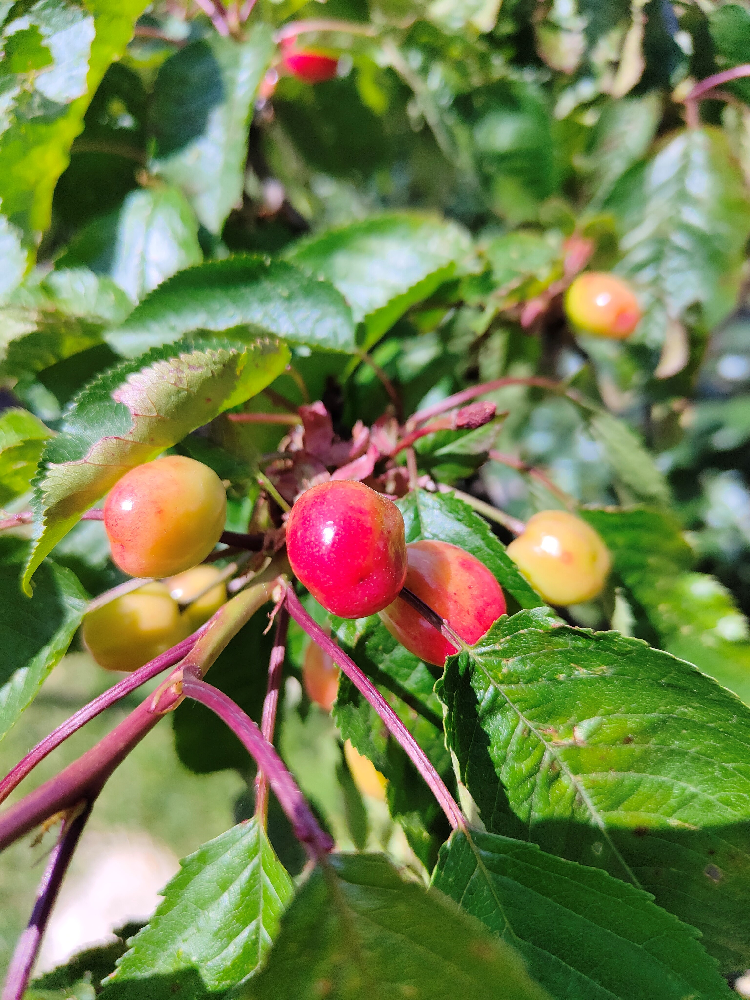

Hormones de bouturage
Obtenue à partir de jeunes bourgeons de saules ou de bouleaux. Permet de multiplier rosiers, cassissiers, framboisiers, vignes, etc…

Macérations pour renforcer
Fabriquées à partir d’œufs, lait, glutamate de cuisine, eau de rinçage du riz, etc... Permet d’obtenir des bactéries pour l’eau des arrosoirs qui aident les plantes à se nourrir.

Purins pour nourrir et soigner
Fabriqués à partir des orties, prêles et consoudes récoltés sur place. Permet de prévenir certaines maladies, nourri les plantes du potager et les fruitiers.

Engrais naturel
Engrais liquide naturel respectueux de l’environnement et de la santé. permet de nourrir les plantes du potager et les fruitiers.